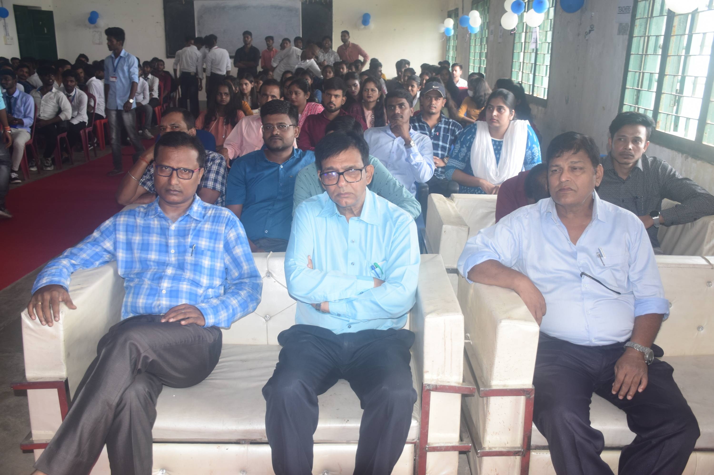
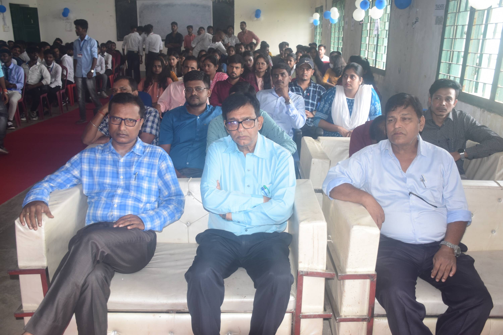

About GOVERNMENT POLYTECHNIC Purnea
History
G P.Purnea is one of the oldest polytechnic in Bihar. It was established in 1960 This is oldest in Koshi zone. It has 30 acres on land, with its only boundary wall and compound. It has the residential facility for principal lecturers, clerks peons etc. The institution is 03 stories with a large no. of lecture rooms, labs, and a separate workshop. All the labs and workshop are well equipped, proper no. of books are available in the library. It offers the education with latest Technology available in the present area. G.P.Purnea offers the education with the latest Technologies available in the present area. (i.e. Wi-Fi Campus, Computer Centre, Digital Library etc). Contact Details: Govt.Polytechnic, Purnea. Purnea, Bihar-854303.AT.-Govt. Polytechnic Purnea,P.O.: Polytechnic Purnea, P.S.: K. Hat, Block:- Purnea East, District, Purnea, PIN : 854303(Bihar). Helpline No.:- Email:- gppurnea@gmail.com, kumar.ranjeet252@gmail.com, Read More..
principal's Message
Government Polytechnic Purnea has established itself as one of the most esteemed institutes of Koshi area. Established in 1960, GP Purnea has a rich tradition of pursuing excellence and has continually reinvented itself in terms of academic programs. We are a preferred destination for aspiring engineers across the country for the past several years. We highly value our partnership with recruiters, and strive to make their recruiting experience productive and positive. I, on behalf of GP Purnea , invite organizations to visit our institute for campus recruitment.
Vision
To excel as one of the leading Technical Institutes, to provide well trained professionals to industries and contribute to nation building through social, economic & technological development of the society”
Mission
Equip students with technical skills and intellectual capacity to meet the demands of current market challenges. •Develop values and working attitude in the students. •Nurture students to excel in their career. •Enhance intellectual and ethical standards of faculty and staff. •Upgrade and maintain facilities for quality learning environment.
Contact us
Permanent Address :-
Goverment Polytechnic Purnea, At-Govt. Polytechnic Purnea, PO-Polytechnic Purnea, PS-K.Hat, Block- Purnea East.
Contact Details :-
Help Line: 06454242564
Email Id: gppurnea@gmail.com, kumar.ranjeet252@gmail.com
Website: www.gppurnea.in
facility
Placement
The Placement Cell plays a crucial role in locating job opportunities for Under Graduates and Post Graduates passing out from the college by keeping in touch with reputed firms and industrial establishments. The Placement Cell operates round the year to facilitate contacts between companies and graduates.
Placement Brochure of G.P.Purnea :-Download.
Computer Center
Computer training refers to resources, companies and services dedicated to helping educate users on computer-related topics. Computer training professionals instruct and help users acquire proficiency in a wide array of areas, including software, hardware, database management, programming, networking and more.
Central Library
Library :-
The College Library is a gateway to a world of Information. The Staff and students have unlimited access to a wealth of Information found in resources like books, magazines, Journals, Hand Books, Annual reports and the Internet.Our Library aims to providing access to its printed resources such as books, periodicals as well as e-resources for the use of faculty and students at the college campus.
Library services :-
E-Resourse facility
Reference services
Free Wi-Fi
Digital services
Computer services - Books Circulation through SMS
Medical facilities
When you provide basic medical care to someone experiencing a sudden injury or illness, it is known as first aid. In some cases, first aid consists of the initial support provided to someone in the middle of a medical emergency. In other cases, first aid consists of the care provided to someone with a minor injury.
Health Center
Primary Health Centre (PHCs), sometimes referred to as public health centres, are state-owned rural health care facilities in India. They are essentially single-physician clinics usually with facilities for minor surgeries.
Sports facility
The dept, objective is to make sports and physical activities an important part of the daily routine making it a way of life and generating fitness awareness among the masses. The program of physical education provides opportunities to participate in various competitions inside the campus as intramural competitions and also at all level and develop personality.
G.P.PURNEA COLLAGE PHOTOS

 
